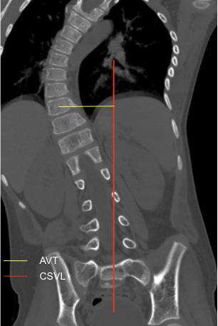

Adapted from: Thapa S, Juvenile idiopathic mid-thoracic scoliosis. Case study, Radiopaedia.org (Accessed on 05 Jan 2026) https://doi.org/10.53347/rID-41523
1) Description of Measurement
Apical Vertebral Translation (AVT) measures the horizontal distance between the midpoint of the apical vertebral body and the Central Sacral Vertical Line (CSVL). It reflects the magnitude of coronal plane deformity in scoliosis and is widely used to assess curve severity, progression, and surgical correction.
2) Instructions to Measure
Imaging Requirements
Step-by-Step
3) Normal vs. Pathologic Ranges
4) Important References
Lenke LG, Betz RR, Harms J, et al. Adolescent idiopathic scoliosis: a new classification to determine extent of spinal arthrodesis. J Bone Joint Surg Am. 2001 Aug;83(8):1169-81.
King HA, Moe JH, Bradford DS, Winter RB. The selection of fusion levels in thoracic idiopathic scoliosis. J Bone Joint Surg Am. 1983 Dec;65(9):1302-13.
La Maida GA, Peroni DR, Ferraro M, et al. Apical vertebral derotation and translation (AVDT) for adolescent idiopathic scoliosis using screws and sublaminar bands: a safer concept for deformity correction. Eur Spine J. 2018 Jun;27(Suppl 2):157-164. doi: 10.1007/s00586-018-5626-9. Epub 2018 May 30.
5) Other info....
AVT is most accurate on standing coronal imaging.
Often combined with Cobb angle, coronal balance, and vertebral rotation to guide operative planning.
Larger AVT values correlate with increased cosmetic deformity and mechanical imbalance.
AVT is also used postoperatively to assess adequacy of deformity correction.